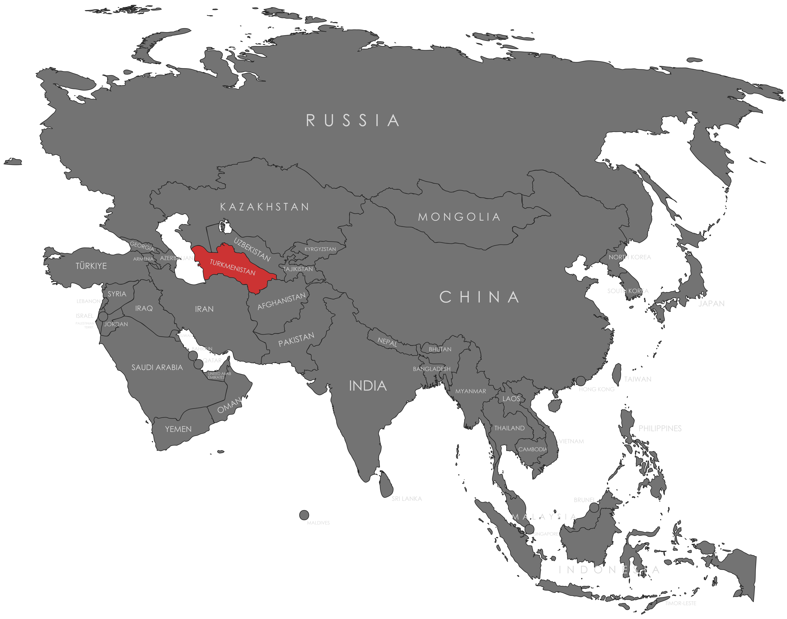

Specifications
- Local Name: Türkmenistan
- Proportion: 2:3
- Name of the Flag: Türkmenistan Döwlet Baýdagy (State Flag of Turkmenistan)
- Adopted: January 24, 2001
Symbolism
- Green: Islam and nature
- Red: Courage and vitality
- White: Peace and purity
- Five traditional carpet motifs: Cultural heritage of the Turkmen tribes
- Crescent and five stars: Islam and unity
Colors:
Shapes / Symbols:
Meaning / Special Display
- Used during national celebrations and official government events to highlight Turkmen identity and heritage.
Description
- The flag reflects Turkmenistan’s cultural heritage, national identity, and independence.
- For its citizens, it signifies pride, unity, and respect for traditional values.

Return to Gallery